Проект «Билет в будущее» организован при поддержке Министерства просвещения РФ, в нем участвуют школы во всех регионах России, он длится с сентября по декабрь 2021 года и проходит онлайн и очно. После прохождения онлайн-диагностики, учащиеся 7 Б класса посетили очные профессиональные пробы в ГАПОУ ЧР "Чебоксарской профессиональном колледже им. Н.В. Никольского" Министерства образования и молодежной политики Чувашской Республики. Ребята познакомились с профессиями колледжа и посетили пробы "Робототехника - профессия будущего", "Песочная терапия. Моделируем будущее". Впереди еще много интересного. Продолжается знакомство участников проекта с профессиями. В декабре все участники получат рекомендации по итогам их участия в проекте.
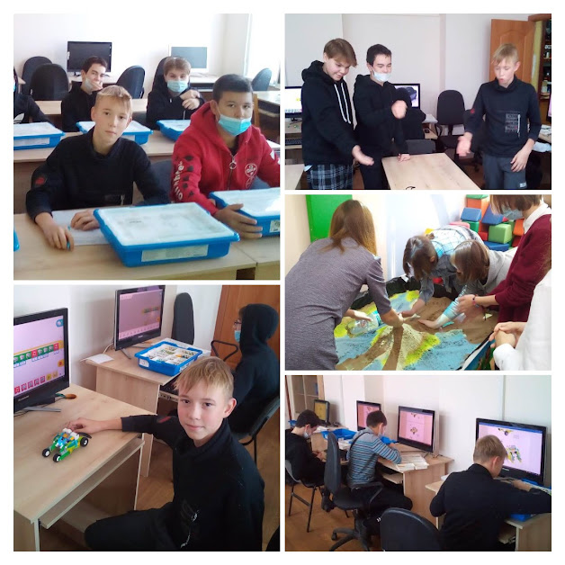11 ноября 2021 года в гимназии прошла очередная акция "ЗАВТРАК С ДИРЕКТОРОМ"
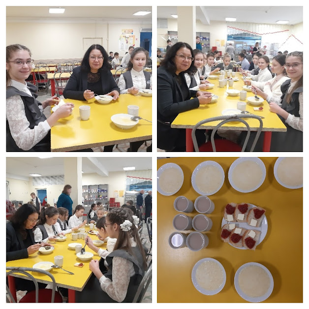В гимназии оформлена выставка стенгазет в рамках недели памяти «А зори здесь сурские…», посвященной 80-летию начала строительства Сурского и Казанского оборонительных рубежей.
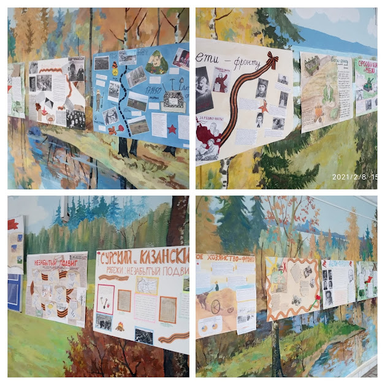Единый урок Мужества, посвященный 80-летию начала строительства Сурского и Казанского оборонительных рубежей, в рамках недели памяти «А зори здесь сурские…» прошел 10 ноября в МБОУ "Гимназия №1"
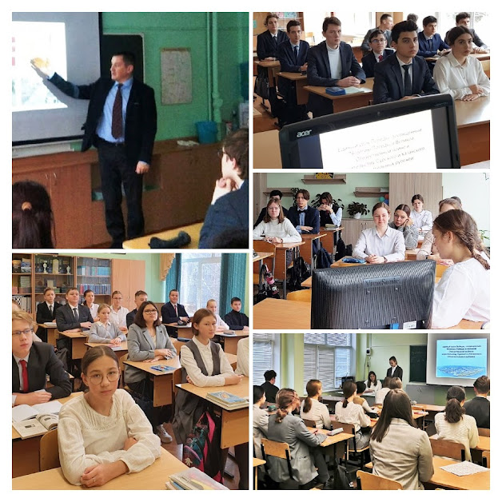С 27 по 29 октября 2021 года учитель родного языка и литературы Леонтьева Н.Г. приняла активное участие в Межрегиональной методической сессии "Волга – пересечение народов, языков, литератур", которая проводилась Общероссийской общественной организацией "Ассоциация учителей литературы и русского языка" (АССУЛ) при поддержке Фонда сохранения и изучения родных языков народов Российской Федерации, кафедры ЮНЕСКО "Образование в поликультурном обществе" РГПУ им. А.И. Герцена и АНО ДПО "Образование - Русское слово". В рамках Методической сессии учителя познакомились с лингводидактическими основами преподавания родных языков и родных литератур, историей и современным состоянием литератур народов региона Большой Волги, узнали о современных педагогических технологиях в преподавании родных языков и актуальных приемах формирования устойчивой мотивации к изучению родных языков, современных медиа-технологиях, которые ориентированы на преподавание и изучение родных языков и литератур данного региона и многое другое.
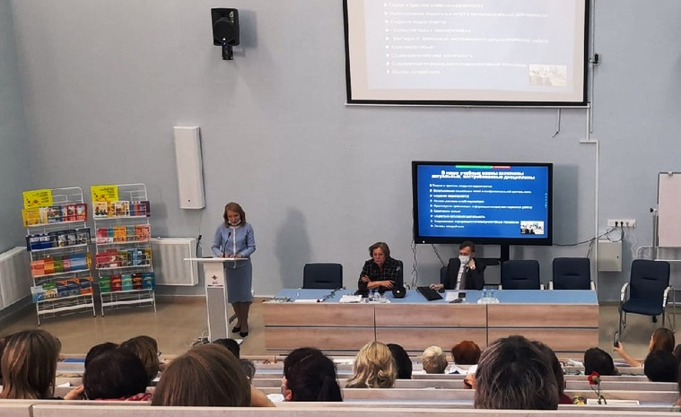 29 октября 2021г ученики 7Г класса в рамках проекта "Билет в будущее" посетили Чебоксарский медицинский колледж. Ребята, побывав в колледже, получили много информации, которая поможет им при определении будущей профессии. Проект «Билет в будущее» формирует осознанность и готовность школьников к профессиональному самоопределению и дает возможность понять свой потенциал.
28 октября 2021 года ученики 7Г класса МБОУ "Гимназия №1" г. Чебоксары в рамках проекта "Билет в будущее" посетили юридический факультет Чувашского государственного университета им. И.Н. Ульянова. Было очень интересно и поучительно! "Билет в будущее" - это проект ранней профессиональной ориентации обучающихся 6–11 классов школ, который реализуется при поддержке государства в рамках национального проекта «Образование». Проект формирует осознанность и готовность школьников к профессиональному самоопределению и дает возможность понять свой потенциал.
В рамках проекта "Билет в будущее" ученики 10А класса посетили художественное училище города Чебоксары. Ребята познакомились с профессией ландшафтный дизайнер, узнали все плюсы и сложности работы. Также ребята попробовали себя в роли дизайнера и даже начертили свои проекты по созданию парка отдыха!
В целях сохранения и развития национально-культурных ценностей народов, проживающих на территории Российской Федерации, в рамках мероприятий, приуроченных ко Дню народного единства, Дню чувашской вышивки и Всероссийской переписи населения, 28 октября 2021 года прошел городской этнофестиваль-конкурс «Туслăхпа тăванлăх – пирĕн пуянлăх/Дружба и братство – наше богатство». Организацию и сопровождение конкурса осуществляли АУ «Центр мониторинга и развития образования» города Чебоксары совместно с городским МО учителей чувашского языка и литературы (творческая лаборатория «Новые технологии в обучении») и педагоги МБОУ "Гимназия №1" Леонтьева Н.Г. и Николаева Е.В. Данное мероприятие проводится на базе МБОУ "Гимназия №1" в четвертый раз, в связи с эпидемиологической ситуацией в условиях распространения короновирусной инфекции уже второй год фестиваль проводится дистанционно. За эти годы программа фестиваля стала очень содержательной и насыщенной. При подведении итогов принимались во внимание индивидуальность, музыкальное оформление номеров, костюмы, вокальное и сценическое мастерство, национальный колорит, эрудиция участников. Жюри оценивало выполнение каждого конкурсного задания. По итогам всех конкурсов места распределились следующим образом:
1 место - Прокопьева Мария, МБОУ «СОШ №43» г. Чебоксары (Руководители – Соколова Т.А., Соколов С.Ю.);
2 место - Тимофеева Кристина, МБОУ «СОШ №19» г. Чебоксары (Руководитель – Мазикова Р.А.);
3 место - Краснова Ульяна, МБОУ «СОШ №33» г. Чебоксары (Руководитель – Диарова И.А.)
Александрова Кира, МБОУ «СОШ №38» г. Чебоксары - победитель в номинации «За сохранение национальных традиций» (Руководитель – Чугунова Э.А.);
Крылова Алина, МБОУ «СОШ №17» г. Чебоксары - победитель в номинации «За национальную самобытность» (Руководитель – Казакова Г.Л.);
Сметанина Елизавета, МБОУ «СОШ № 57» г. г. Чебоксары - победитель в номинации «За особую творческую устремлённость» (Руководитель – Алексеева Л.А.)
И, конечно же, в напряженной борьбе ПРИЗ ЗРИТЕЛЬСКИХ СИМПАТИЙ завоевала Прокопьева Мария, ученица МБОУ «СОШ №43» г. Чебоксары! Поздравляем!!!
Настоящий праздник дружбы состоялся! Выражаем огромную благодарность всем участникам конкурса за неравнодушие к традициям нашего народа. Большое спасибо руководителям за приобщение детей к культуре и обычаям народов, проживающих в дружбе и согласии на территории нашей любимой Чувашии! Также благодарим членов жюри за проделанную работу! Желаем всем дальнейших творческих успехов!
28 октября обучающиеся 10Д класса посетили Чебоксарский Камерный театр. Постановка "Три жизни Айседоры Дункан" приковала внимание гимназистов. Ребята смогли узнать о жизни легендарной танцовщицы, которая в начале XX века перевернула представление общества об искусстве танца.
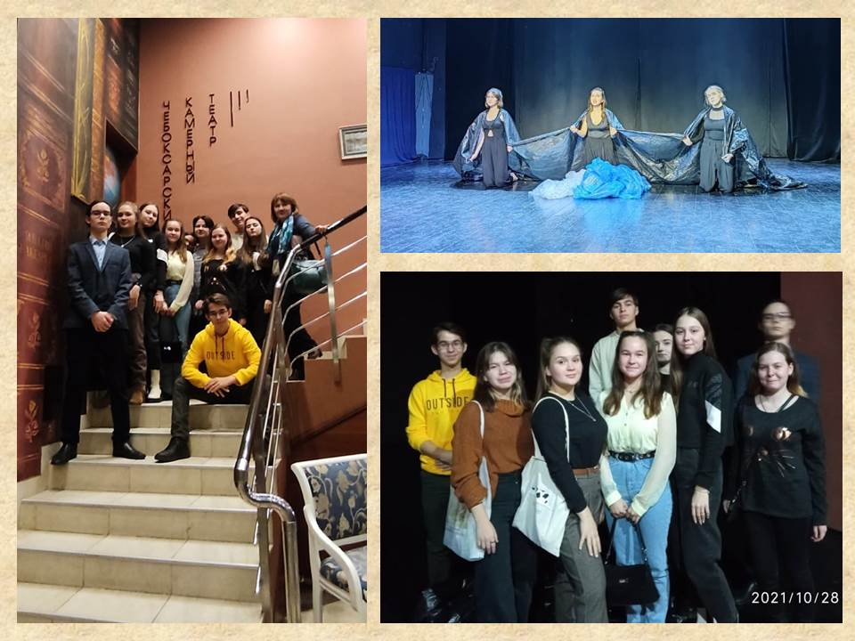В рамках Всероссийского фестиваля "Человек. Гражданин. Ученый" на химико-фармацевтическом факультете ЧГУ 28 октября прошел химический турнир для учащихся профильных классов, где команда 10Г класса нашей гимназии заняла 3 место! Задания, предложенные командам, были высокого уровня сложности и, вместе с тем, очень интересно составлены. Поэтому, несмотря на то, что место у нас не первое, конкурс и участие в нем доставили удовольствие всей команде.
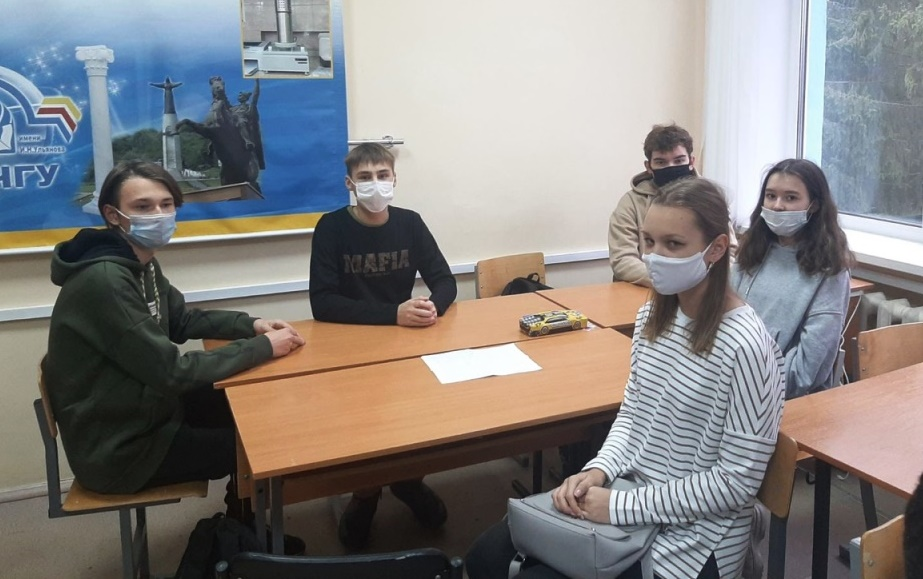28 октября в Чебоксарах подвели итоги Года трудового подвига строителей оборонительных рубежей, которые возводились в годы Великой Отечественной войны на территории Чувашской Республики. На торжественное мероприятие были приглашены представители поисковых отрядов Чувашии. Мероприятие началось с речи Главы Чувашской Республики Олега Николаева. Основные мероприятия прошли в 2021 году — в год 80-летия строительства рубежей, однако памятные акции продолжатся и в 2022 году. В числе ключевых событий — открытие федерального мемориала. Ребята из поискового отряда «Искра» рассказали о своей исследовательской работе представителям СМИ.
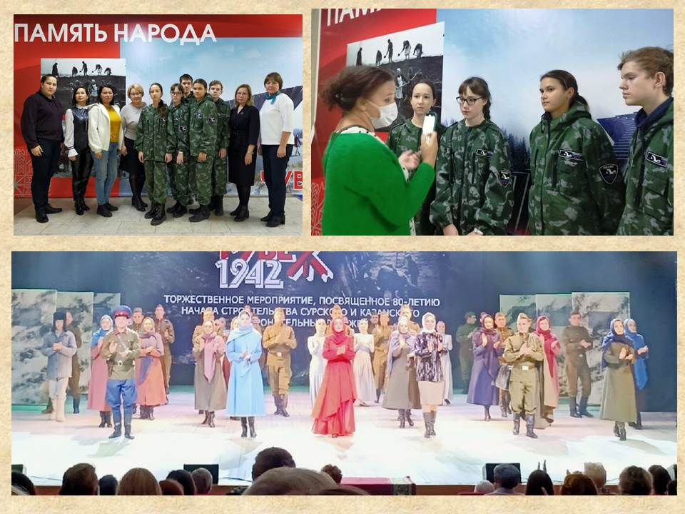28 октября группа учащихся 10А класса посетила весьма необычный мастер-класс "Чайна-Таун". Ребята прочувствовали загадочность Востока и поближе познакомились с традициями Китая. Они узнали о китайской живописи и даже сами создали свои картины. Рисовали бамбук, так как он символ несгибаемости и целеустремленности. После рисования ребята поучаствовали в чайной церемонии и даже испробовали два вида чая.
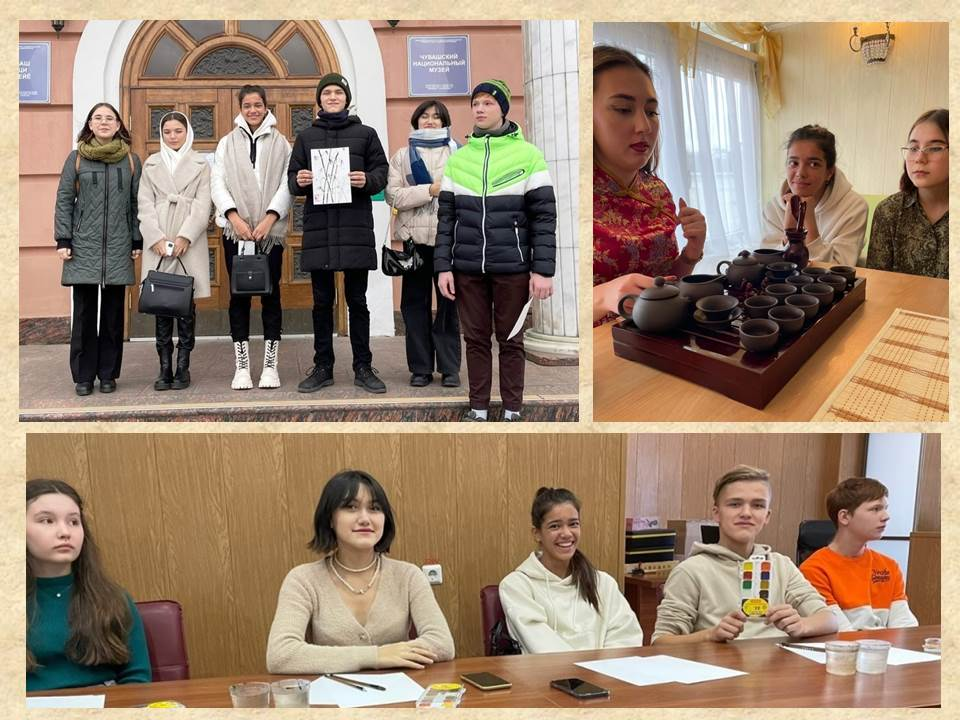 Октябрь 1941. Лютуют под Москвой фашистов легионы,
а в это время под Сурой готовят оборону.
Здесь не сшибались в битве брони,
не погибал за взводом взвод, враг не дошёл,
но к обороне и здесь готовился народ.
Здесь роем пули не летели, не лезли танки на откос,
здесь наши женщины потели в сорокаградусный мороз.
Не гибли люди в обороне, от пуль здесь не было смертей,
здесь кровь сочилась из ладоней уставших насмерть матерей.
Враг не дошёл: страна остановила. Разбит под Тулой, угнан от Москвы,
здесь кровь бойцов не обагрила под осень высохшей травы.
Гимназисты-старшеклассники на каникулах посещают по программе "Пушкинская карта" выставку «Оборонительные рубежи Чувашии – подвиг в тылу», посвященную 80-летию строительства на территории Чувашской Республики Сурского и Казанского оборонительных рубежей 1941–1942 годов. Они знакомятся с экспонатами: бутовый камень, который использовался при строительстве, макет карты Чувашской АССР, где изображены центры военно-полевых строительств, линии рубежей, примеры дзотов, противотанковых рвов и ловушек для танков.
Осень - пора длинных вечеров и долгих душевных семейных чаепитий. Если у вас возникают вопросы, что бы такое вкусненькое приготовить на вечер, мы с удовольствием делимся с вами рецептами вкуснейших блюд на осеннюю тематику, которые прислали нам наши гимназисты! Приятного аппетита!
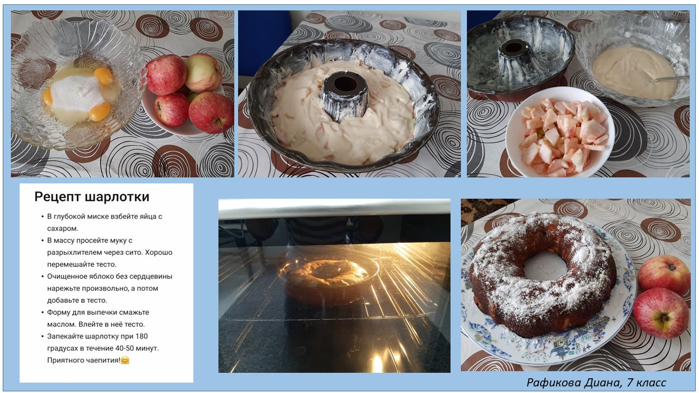28 октября учащиеся 10Б класса посетили Чувашский краеведческий музей в рамках проекта "Пушкинская карта", приняли участие в квест-игре "Секреты экономики". Игра была очень познавательной, ребята много полезной информации получили о своём родном крае.
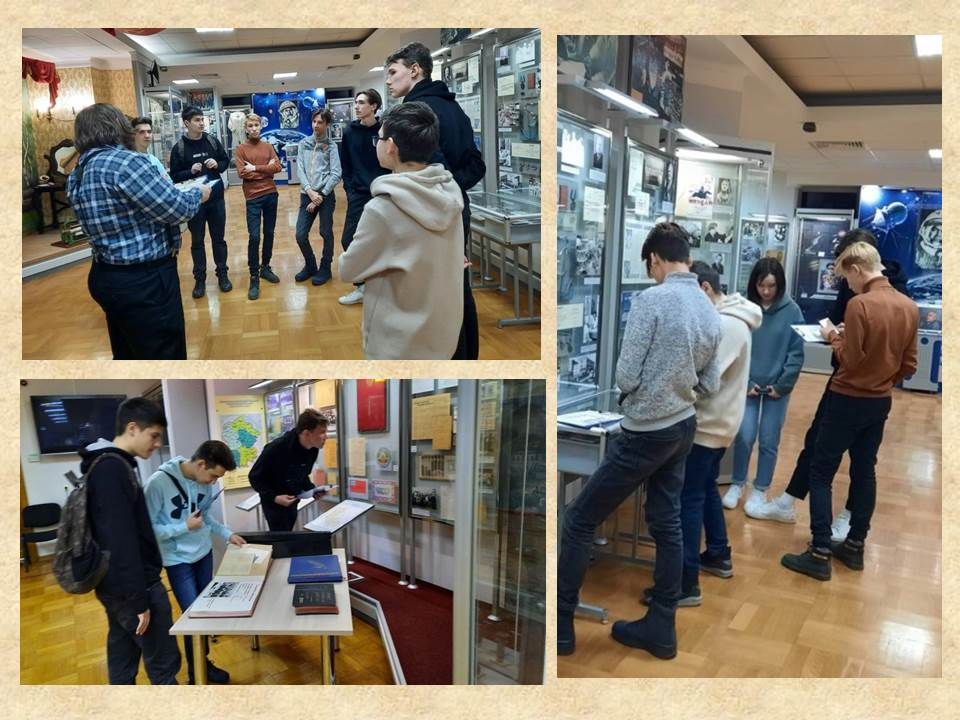Каникулы для учащихся 9Г класса - это дополнительное время для подготовки к ОГЭ по биологии и к олимпиадам.В гимназии во время осенних каникул учитель биологии, Потапова А.В. на платформе Zoom проводит консультации по биологии. Ученики понимают, что без упорства и без дополнительных занятий получить желаемые баллы на экзаменах будет нелегко, поэтому принимают активное участие в консультации.
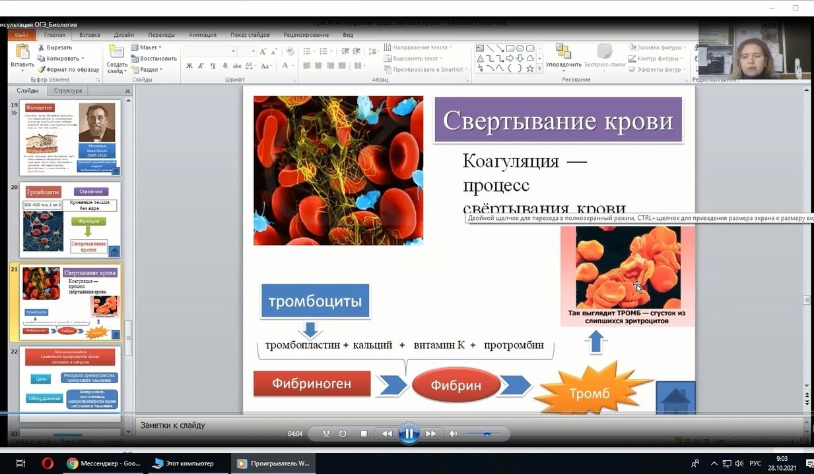27 октября учащиеся 10А класса посетили ЧГУ им. И.Н. Ульянова в рамках реализации проекта "Билет в будущее". Ребята поучаствовали в мастер-классе на тему "Интернет вещей". В процессе работы ученикам была предоставлена возможность написать код для платы Arduino. У ребят получилась целая гирлянда со звуковым оповещением и даже Wi-Fi модуль, а студенты познакомили со своими проектами по робототехнике и программированию.
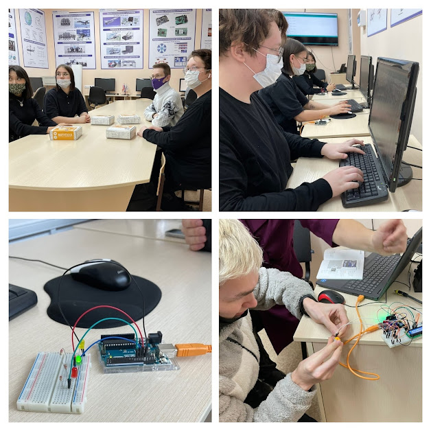Пусть эпидемиологическая ситуация в городе вносит свои коррективы в нашу жизнь, но старшеклассникам нужно готовиться к предстоящим экзаменам. Поэтому обучающиеся не упускают возможности получить новые знания во время каникул. Так, обучающиеся 10Б класса продолжают занятия по дополнительным образовательным услугам, где начинается изучение тригонометрии ( учитель - Анисимова А.А.) Ученики 11Д и 11 В классов проходят подготовку к ЕГЭ по математике по онлайн занятиям в ZOOM. Учащиеся 11Д класса сегодня решали тренажёры по логарифмам, а ученики 11В класса изучали и решали задачи по теме "Свойства показательной функции" (Учитель - Павлова Н.А.)
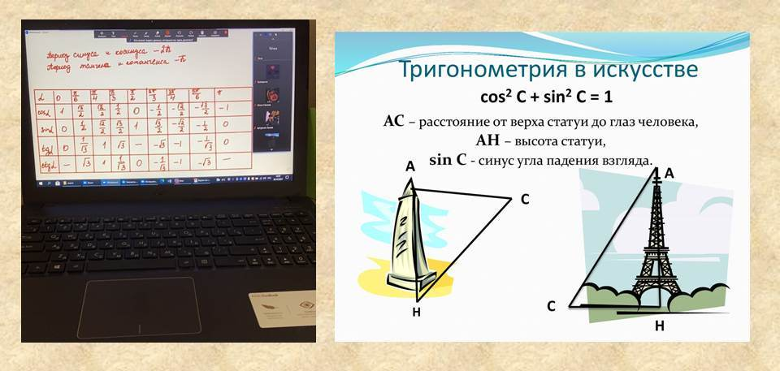26 октября 2021 года был проведен муниципальный тур Чемпионата по чтению вслух среди старшеклассников «Страница΄22» в Актовом зале Национальной библиотеки Чувашской Республики. Ученица нашей гимназии Юлия Ксенонофонтова стала призёром муниципального тура Чемпионата по чтению! Поздравляем и желаем дальнейших успехов! (Наставник - учитель русского языка и литературы Мизурова В. Н.)
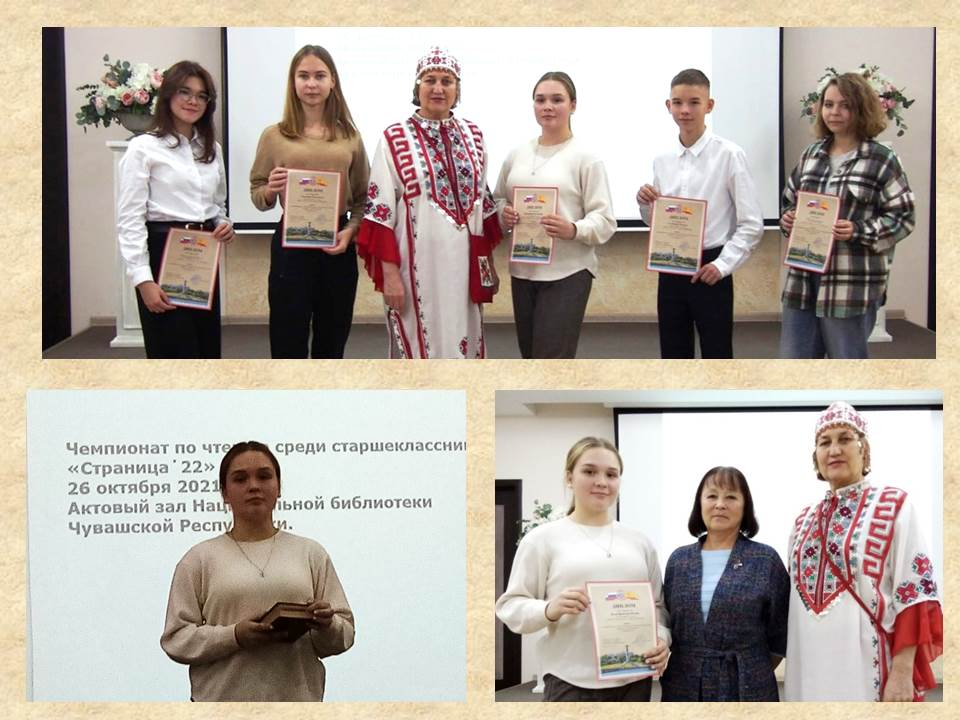26 октября, учителя гимназии дружной командой подготовили к зимнему сезону тематическую клумбу во дворе гимназии.
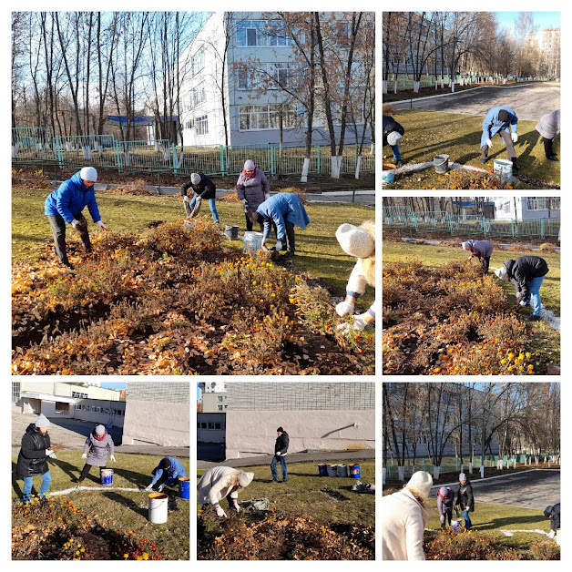